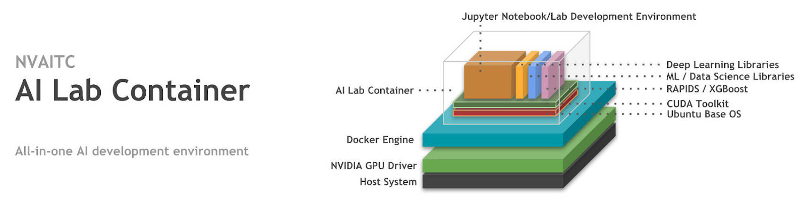

The AI Lab container has been painstakingly tailored to provide you with the best out-of-the-box experience to use various AI frameworks. These include the various Python data-science, machine learning, and deep learning frameworks. Where possible, the libraries are GPU-accelerated and optimised for performance.
To find out more, head over to the GitHub repository where you will find more detailed information about AI Lab.
In this guide, you will learn how to set-up your own personal AI development environment. You will configure your Linux workstation or server to use with AI Lab to swiftly get started with a wide range of AI projects without worrying about installing and configuring the various libraries.
nvidia-docker)It is very important that you verify that you meet the following system requirements:
418.x as of March 2019)nvidia-docker)If you meet the above requirements, you are free to skip past the next section, to "Before we continue". Else, keep on reading.
To use your NVIDIA GPU for compute tasks like machine learning and deep learning, you will need to install the NVIDIA drivers and CUDA Toolkit.
For this, please make sure that you are on a clean Ubuntu system (no existing NVIDIA drivers or libraries) and that you have sudo (root) permissions. If you're the only user, you probably do. If you're using a shared workstation or server, please approach your administrator.
Download and install NVIDIA drivers and the CUDA Toolkit, we can head over to the NVIDIA website and download the CUDA Toolkit installer, which will install both the CUDA Toolkit, as well as the latest compatible driver.
You'll need to open a new Terminal window:
CTRL + ALT + T , or navigate to your applications menu and launch the Terminal app# navigate to your Downloads folder. Usually, this can be done with: cd ~/Downloads # install the CUDA network repository sudo dpkg -i cuda-repo-ubuntu1804_10.1.105-1_amd64.deb sudo apt-key adv --fetch-keys https://developer.download.nvidia.com/compute/cuda/repos/ubuntu1804/x86_64/7fa2af80.pub sudo apt-get update # install the CUDA toolkit and NVIDIA drivers sudo apt-get install cuda
The installation will take some time to complete (around 30 minutes on a Broadband internet connection).
Please reboot your system before proceeding to the next step.
nvidia-smiOpen a new Terminal and type nvidia-smi. It should produce an output similar to the one below:
(placeholder)
If you see that, congratulations! The NVIDIA drivers and CUDA Toolkit have been installed successfully.
To standardise and simplify the process of running the various machine learning and deep learning frameworks, the industry has largely turned to using containers. In this step, you will be installing the commonly used Docker runtime for running containers.
In this step, you will be adding the Docker repository to Ubuntu and install Docker from there. Again, please take note every command is one line.
sudo apt-get install -y apt-transport-https ca-certificates curl software-properties-common curl -fsSL https://download.docker.com/linux/ubuntu/gpg | sudo apt-key add - sudo add-apt-repository "deb [arch=amd64] https://download.docker.com/linux/ubuntu $(lsb_release -cs) stable" sudo apt-get update sudo apt-get install docker-ce docker-ce-cli containerd.io
To verify that Docker has been installed correctly, we will be running the hello-world container with the following command:
docker run hello-world
Since the container image hello-world does not yet exist on our system, Docker will pull the image before running it. You will see the following output:
(placeholder)
Congratulations! Now we have a working container runtime.
In this step, we will install the NVIDIA Container Runtime (also known as nvidia-docker) in order to allow